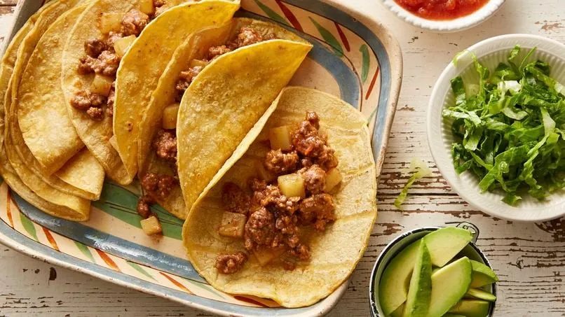

RECETAS PARA HACER EN CASA
Aquí encontrarás las
Mejores recetas para hacer en casa
Nuestras recetas mas populares

Spagueti Rojo
- Tiempo total: 25 a 30 minutos
- Tiempo de cocción: 8 a 10 minutos

Tacos de Carne molida
- Tiempo total: 30 a 35 minutos
- Tiempo de cocción de la carne: 6 a 8 minutos por lado

Ramen de Pollo y Verduras
- Tiempo total: 20 a 25 minutos
- Tiempo de cocción de los fideos: 3 a 4 minutos

Hot dogs con Tocino y Queso
- Tiempo total: 15 minutos
- Tiempo de cocción del tocino: 5 a 7 minutos

Huevos Motuleños
- Tiempo total: 20 a 25 minutos
- Tiempo de cocción de los huevos: 5 a 7 minutos

Champiñones Rellenos de Queso Crema
- Tiempo total: 25 a 30 minutos
- Tiempo de horneado: 15 a 20 minutos